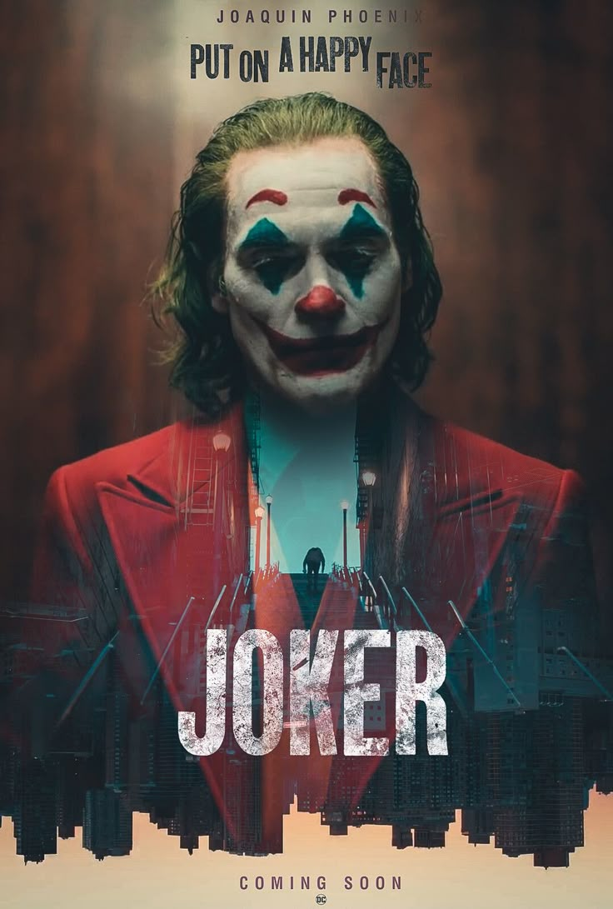

Джокер
- Год: 2019
- Страны: США, Канада, Австралия
- Режиссёр: Тодд Филлипс
- Жанры: Драма, Преступление, Триллер
- Длительность: 122 минут
- Бюджет: $70 млн
- Возраст: 18+
Готэм, начало 1980-х годов
Комик Артур Флек живет с больной матерью, которая с детства учит его «ходить с улыбкой». Пытаясь нести в мир хорошее и дарить людям радость, Артур сталкивается с человеческой жестокостью и постепенно приходит к выводу, что этот мир получит от него не добрую улыбку, а ухмылку злодея Джокера.
Хоакин Феникс
Артур Флек / Джокер
Роберт Де Ниро
Мюррей Франклин
Зази Битц
Софи Дюмон